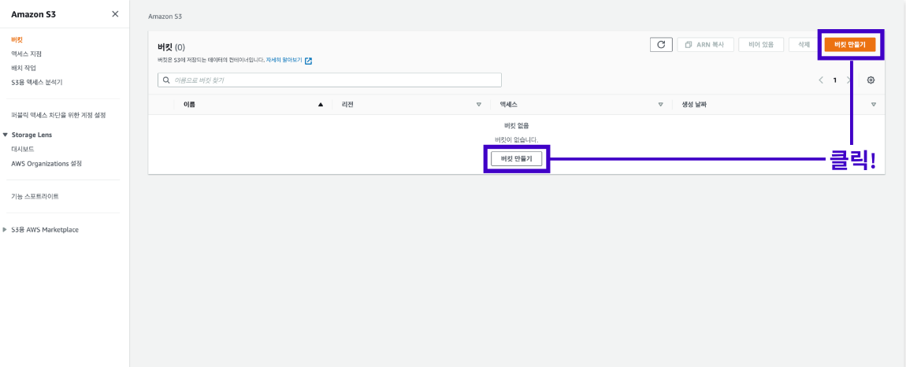
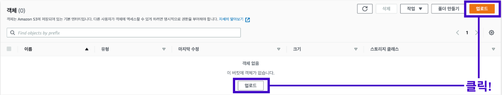

S3 호스팅
1. 정적 웹 사이트 호스팅 과정
정적 웹 사이트를 호스팅하는 과정은 4 단계로 요약된다.
구현이 완성된 정적 웹 페이지를 빌드한다.
빌드 과정이 끝나면 S3 대시보드에 접속하여 버킷을 생성하고 생성한 버킷을 정적 웹 사이트 호스팅용으로 구성한다.
빌드된 정적 웹 페이지를 버킷에 업로드한다.
퍼블릭 액세스 차단 설정을 해제하고 다른 사용자의 접근 권한을 부여하는 버킷 정책을 생성한다.
모든 과정이 끝나면 다른 사용자들이 버킷에 업로드된 정적 웹 페이지에 접속할 수 있다.
2. 정적 웹 페이지 빌드 과정
빌드하기에 앞서 환경 변수를 담은 .env 파일을 확인한다.
.env 파일의 파일명이 제대로 적혀있는지 환경 변수에 담긴 서버의 주소는 문제가 없는지 확인한다.
참고로 요청을 보내는 서버의 주소를 환경 변수에 담을 때는 필히 "http://"나 "https://"를 포함해야 한다.
환경 변수를 제대로 설정하지 않으면 서버에 요청을 제대로 보내지 못하게 되고 그 결과로 정상적인 응답을 받아올 수 없다.
환경 변수 관련 설정이 완료되면 터미널에 아래 명령어를 입력하여 빌드 과정을 진행한다.
npm run build
빌드 과정이 끝나면 해당 폴더에 build 폴더가 생성된 것을 확인할 수 있다.
3. S3 호스팅
AWS 홈페이지 메인 콘솔 창에서 S3를 검색하여 S3 메인 화면에 접속한다.
S3 메인 화면으로 이동하면 아래 사진과 같은 페이지를 확인할 수 있다.
여기에서 버킷 만들기 버튼을 클릭한다.

버킷 만들기 버튼을 클릭했으면 여러 옵션을 지정할 수 있는 페이지로 이동된다.
여기에서 일반 구성 옵션에 있는 내용을 완성하면 된다.
먼저 버킷 이름을 작성하는데 버킷 이름은 각 리전에서 고유해야 한다.
버킷 이름 작성이 완료되면 화면을 가장 아래로 이동하여 버킷 만들기 버튼을 클릭한다.

일정 시간이 지나면 버킷이 성공적으로 생성되었다는 메시지와 함께 아래 사진과 같은 화면으로 이동된다.
해당 화면에서 만들어진 버킷을 클릭한다.
속성 메뉴를 눌러 이동한다.
속성 메뉴 화면에서 페이지의 스크롤을 가장 아래로 내리면 아래 사진과 같이 정적 웹 사이트 호스팅 옵션이 보이는데 이 중 편집 버튼을 클릭한다.
편집 버튼을 클릭하면 정적 웹 사이트 호스팅의 활성화/비활성화 여부를 묻는 창이 등장한다.
여기에서 활성화 옵션을 선택한다.
활성화를 선택하면 여러 옵션을 추가로 변경할 수 있는데 그 중에서 인덱스 문서를 작성한다.
인덱스 문서 부분에는 웹 사이트 주소에 처음 접속했을 때 보일 기본 페이지를 지정한다.
오류 문서 부분은 공란으로 비워두어도 좋지만 혹시 모를 오류 발생 시 보여줄 페이지를 지정한다.
페이지 설정이 완료되면 변경 사항 저장 버튼을 클릭한다.
변경 사항이 저장되면 정적 웹 사이트 호스팅 옵션을 성공적으로 편집했다는 메시지와 함께 속성 메뉴 페이지로 리디렉션 된다.
해당 페이지의 가장 아래로 스크롤을 내려서 방금 편집했던 정적 웹 사이트 호스팅 옵션 부분으로 이동하면 예전에 존재하지 않았던 버킷 웹 사이트 엔드 포인트가 생성되어 있으며 해당 주소를 클릭한다.
해당 주소를 클릭하면 아래와 같은 에러 메시지를 확인할 수 있다.
핵심 이유로는 버킷에 정적 웹 페이지 파일을 아직 업로드하지 않았고 퍼블릭 액세스 설정 변경과 정책 생성을 하지 않았기 때문이다.
속성 메뉴 옆에 있는 객체 메뉴를 클릭해서 이동한다.
객체 메뉴로 이동하여 업로드 버튼을 클릭한다.

아래와 같은 화면이 보이면 여기에 build 폴더 안에 포함된 내용을 업로드한다.
build 폴더를 열어 안에 있는 파일을 모두 드래그하여 선택한다.
객체를 업로드하는 페이지에 필요한 파일을 드래그& 드랍 형식으로 업로드한다.
이 과정에서 주의할 점은 build 폴더 자체를 업로드하는 게 아닌 build 폴더 안에 저장된 파일만 업로드해야 한다는 점이다.
위 작업을 완료하면 아래 사진과 같이 build 폴더 안에 있는 파일들이 업로드 대기 목록에 추가된다.
추가가 완료되었으면 업로드 버튼을 눌러서 다음 과정을 진행한다.
업로드가 완료되면 아래 사진처럼 업로드 성공 메시지를 확인할 수 있다.
이제 정적 웹 호스팅의 마지막 과정으로 퍼블릭 액세스 차단 옵션을 해제하고 정책을 생성한다.
먼저 S3 메인 화면으로 이동하여 생성한 버킷을 클한다.
권한 메뉴를 클릭한다.
권한 메뉴에서 퍼블릭 액세스 차단(버킷 설정)이라는 옵션을 찾아 편집 버튼을 클릭한다.
모든 퍼블릭 액세스 차단 옵션의 체크 박스를 해제한 후 변경 사항 저장 버튼을 클릭한다.
변경 사항 저장 버튼을 클릭하면 경고 창이 뜨는데 "확인"을 기입하고 다음 과정으로 넘어간다.
버킷 퍼블릭 액세스 차단을 변경하고 나면 다시 권한 메뉴로 리디렉션 된다.
퍼블릭 액세스 차단(버킷 설정) 옵션 밑에 있는 버킷 정책 옵션으로 이동하여 편집버튼을 클릭한다.
정책 생성기 버튼을 클릭한다.
정책 생성기 버튼을 클릭하면 아래와 같은 화면이 뜨는데 여기에서 버킷 정책을 생성한다.
Select Type of Policy 옵션에서는 S3 Bucket Policy를 선택한다.
Principal 옵션은 권한을 적용할 사용자를 정한다.
모두에게 공개하려면 "*"를 입력한다.
Actions 옵션에서는 GetObject를 선택한다.
GetObject 옵션을 선택하게 되면 버킷에 접근하는 모든 사용자가 버킷 내에 저장된 객체 데이터를 읽을 수 있게 된다.
옵션을 다 선택하면 Add Statement 버튼을 클릭한다.
위 과정을 다 진행하였다면 최종적으로 Generate Policy 버튼을 눌러 정책을 생성한다.
정책은 아래 사진과 같이 JSON 형태로 생성된다.
생성된 정책을 드래그해서 복사한 뒤 Close 버튼을 누른다.
다시 버킷 정책 편집 페이지로 돌아가서 생성한 버킷 정책을 붙여 넣는다.
그리고 변경 사항 저장 버튼을 클릭한다.
성공적으로 완료되었는지 테스트하기 위해서 속성 메뉴로 이동한다.
정적 웹 사이트 호스팅 옵션을 찾은 뒤 버킷 웹 사이트 엔드 포인트 주소를 클릭하여 테스트를 진행한다.
브라우저에 정상적으로 화면이 출력된다면 성공적으로 마무리된 것이다.